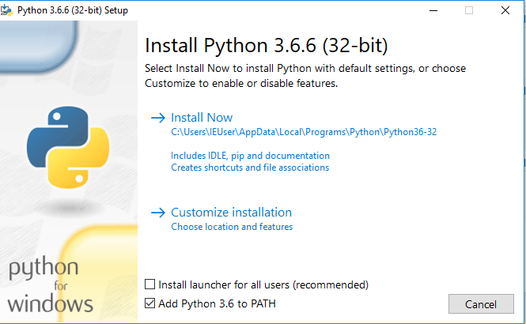

Quicker, smaller setup¶
This setup is quicker than the setup in Setup beforehand, and uses a lot less disk space, but it is more involved.
This is the setup for Windows.
Use this page for setup if you are on a slow laptop, a laptop without much disk space, or you are installing on a borrowed laptop where you need to get going quickly.
Open your web browser, and go to https://www.python.org/downloads/release/python-366
Download the Windows x86 executable installer.
Run the installer. At the initial screen, unselect “Install launcher for all users”, and select “Add Python 3.6 to PATH”. Here’s a screenshot of the correct options:
When the options are right, click on “Install Now” to continue the installation. Click “Close” when the installation is done.
Click on the Windows start icon and type “powershell”, press Return. The Windows Powershell terminal application will open.
At the Powershell prompt, type the following:
pip install pandas matplotlib jupyter
and press return. Wait while the packages install, it will be about 5 minutes, on a slow machine.
At the Powershell prompt, type:
jupyter notebook
to open the Jupyter notebook in your browser. You may be asked which browser you would like to use for the Jupyter App. I suggest Google Chrome or Firefox, if you have it.
Whenever you want to open the Jupyter notebook, open Powershell, and type
jupyter notebookas above.